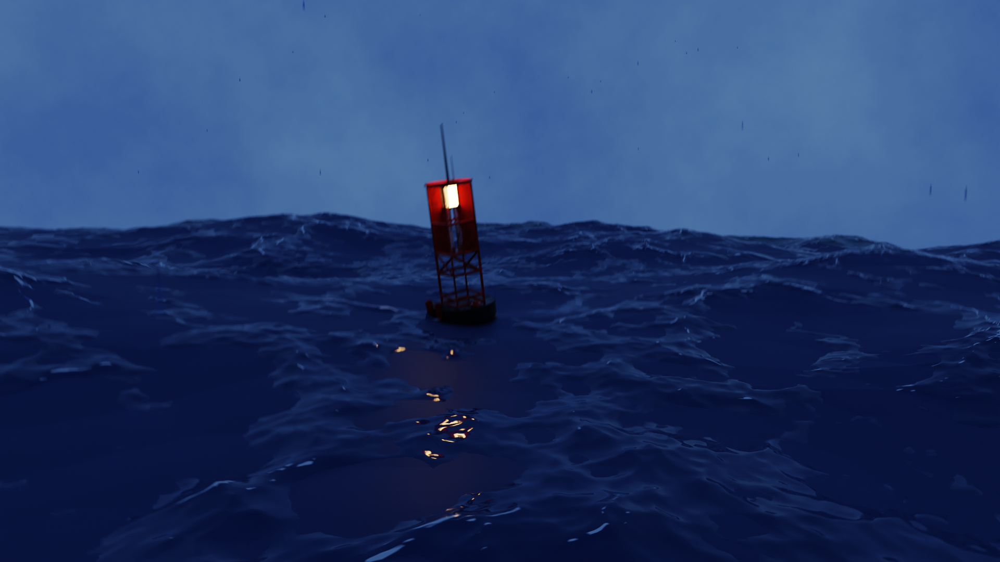

PROJET 3D
PROFONDEURS

Le Concept
Création d'un environnement glaciaire hyper-réaliste. Ce projet d'exploration a consisté à modéliser un grand espace ouvert, en travaillant minutieusement l'éclairage volumétrique, les shaders de glace et l'atmosphère pour obtenir un rendu photoréaliste et cinématographique.
L'Éclairage
L'utilisation d'un système HDRI couplé à des lumières directionnelles permet de simuler un soleil polaire rasant, renforçant les ombres dures sur les crêtes de glace et les jeux de sub-surface scattering.